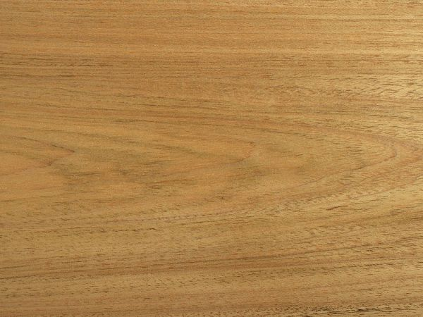
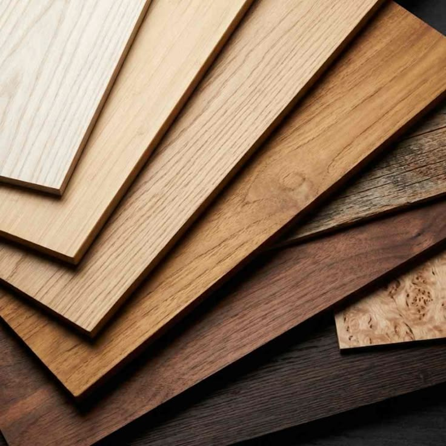

Valvic
Proposta exclusiva
Bia
& Matheus
Sala de Estar & Jantar — três peças sob medida
01O seu projeto
Três peças que conversam entre si — e que pedem mão de marcenaria de
verdade: um aparador em L de encaixe limpo, uma estante de quase três metros
com um recorte curvo, e uma cristaleira de vidro, leve e precisa.
O projeto é da Giovanna. O nosso ofício
é executá-lo com maestria — do desenho à instalação, com um padrão único de acabamento
para que cada detalhe chegue exatamente como foi imaginado. É isso que esta proposta apresenta:
não um móvel, mas a certeza de quem vai construí-lo.
i
Aparador em L
móvel baixo · puxador cava redonda
ii
Estante 2,77 m
laqueada · recorte circular · 2 gavetas
iii
Cristaleira
vidro de correr · fecha-toque Blum
03Os diferenciais
O que separa uma marcenaria comum de
uma marcenaria fina está nos detalhes — e eles definem como a sala vai envelhecer ao longo dos anos.
✦
Lâmina natural de Freijó
Na linha Natural, madeira real: folha de Freijó com acabamento feito face a
face (frente, verso e laterais aparentes). O veio vivo da madeira, não uma impressão.
✦
Portas de correr em vidro
As portas superiores da cristaleira são de correr em vidro temperado jateado —
deslizam leves e silenciosas, sem batente. As portas do corpo contam com fecha-toque
Blum (Tip-On), com garantia vitalícia do mecanismo.
✦
Vidro temperado jateado
Portas em vidro temperado (resistente) e jateado (fosco, translúcido):
leveza visual com proteção real do que fica guardado.
✦
Ferragem Hettich
Dobradiças Novisys e corrediças ocultas Quadro com soft-close —
fechamento suave e silencioso. É o que sustenta a garantia de 10 anos.
✦
Recorte circular em CNC
A curva da estante é fresada em CNC: precisão e limpeza de borda que a execução
manual não alcança. O detalhe que vira a assinatura da peça.
✦
Laca lisa premium
A estante é laqueada: superfície uniforme, sem emendas aparentes, no tom exato do
projeto da Giovanna.
04O processo da lâmina natural
Na Linha Natural, cada peça é
revestida com folha de madeira natural de Freijó — madeira de verdade, trabalhada à mão, folha a folha.



Lâmina natural de Freijó · madeira realcada folha é única — o veio nunca se repete
ETAPA 01
Seleção da lâmina
As folhas de Freijó são escolhidas uma a uma — veio, textura e tom. Madeira de fibra densa, de crescimento lento.
ETAPA 02
Casamento do veio
As folhas são casadas folha a folha para o veio ter continuidade entre as peças — como se o móvel tivesse nascido de um único tronco. É o detalhe que distingue a alta marcenaria.
ETAPA 03
Prensagem sobre o painel
A lâmina é colada (cola PVA) e prensada sobre o MDF — o visual da madeira maciça com a estabilidade do painel, que não trabalha com o tempo.
ETAPA 04
Lixamento
Lixas progressivamente mais finas, sempre no sentido do veio — o toque liso e contínuo da marcenaria fina.
ETAPA 05
Acabamento face a face
Selador e verniz (fosco ou tonalizado) em várias demãos, aplicados em cada face aparente — proteção e profundidade de cor que duram.
05Investimento
As três peças, a mesma ferragem premium
e a mesma garantia nas duas linhas. O que muda é o acabamento — e, com ele, a presença da
madeira na sala.
Assinada
Linha Natural
Lâmina natural de Freijó
Madeira real nas peças do projeto: folha natural de Freijó com
acabamento face a face. O veio, o tom e a textura da madeira viva — o acabamento
mais nobre da marcenaria, para a sala ser o ponto alto da casa.
R$ 70.000
Garantia 10 anos · estrutura e ferragens
Linha Essencial
Melamínico amadeirado Freijó
A estética amadeirada Freijó em melamínico de alta resistência —
superfície estável, fácil de manter, excelente custo-benefício. O mesmo desenho, a mesma
ferragem e a mesma garantia da linha Natural.
R$ 36.000
Garantia 10 anos · estrutura e ferragens
| Peça | Linha Essencial | Linha Natural |
|---|
| Aparador em L | R$ 6.200 | R$ 28.900 |
| Estante 2,77 m · laqueada, igual nas duas | R$ 24.500 | R$ 24.500 |
| Cristaleira | R$ 5.300 | R$ 16.600 |
| Total | R$ 36.000 | R$ 70.000 |
A estante é a mesma nas duas linhas (laqueada) — a diferença de investimento está no aparador e na cristaleira, que ganham a lâmina natural de Freijó.
Prazo de entrega
100 a 120 dias úteis
06Condições & garantia
Pagamento
Quanto mais você antecipa, maior o desconto — sobre a linha escolhida.
| Condição | Vantagem |
|---|
| 30% de entrada + saldo em até 10× no cartão | — |
| 50% de entrada + saldo em até 8× | 3% de desconto |
| 70% de entrada + saldo em até 6× | 5% de desconto |
| 70% de entrada + saldo via transferência | 7% de desconto |
Garantia Valvic
A sua sala sai com 10 anos
de garantia em estrutura e ferragens (linha Hettich), e o fecha-toque Blum com
garantia vitalícia do mecanismo. Instalações e regulagens: 2 anos. Retorno em 24h,
visita técnica em até 3 dias úteis e custo zero dentro do prazo.
✦ ✦ ✦
Vamos começar?
Reservamos a sua vaga na agenda de produção com a entrada — e
seguimos para a medição final e o cronograma. Estou à disposição para apresentar a proposta
pessoalmente e tirar qualquer dúvida.